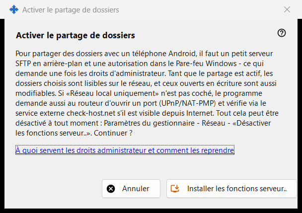
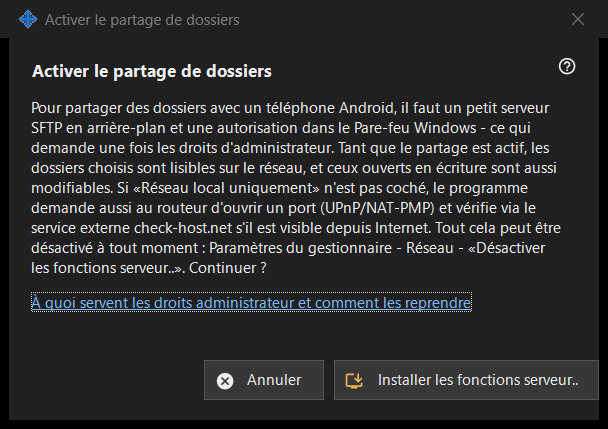

Activer le partage de dossiers
Objectif
Demande l'autorisation d'installer le côté serveur du partage : un petit serveur SFTP en arrière-plan et une exception du Pare-feu Windows. Elle s'ouvre depuis le bouton «Activer les fonctions serveur..» de la fenêtre principale et depuis les assistants, et exige une seule fois les droits d'administrateur.


Dans cet ordre
- Lisez l'explication.
- Appuyez sur «Installer les fonctions serveur..».
- Confirmez la demande d'administrateur de Windows.
- Attendez la ligne de résultat ; en cas de succès, la fenêtre indique que le partage de dossiers est activé.
- Appuyez sur «Annuler» pour quitter sans modification.
Les éléments
Ce que cela fait
Partager des dossiers avec un téléphone Android demande un petit serveur SFTP en arrière-plan et une autorisation du Pare-feu Windows. Tant que le partage est actif, les dossiers choisis peuvent être lus par le réseau, et ceux ouverts en écriture peuvent aussi être modifiés. Si l'option réseau local uniquement n'est pas cochée, le programme demande aussi au routeur d'ouvrir un port (UPnP/NAT-PMP) et vérifie l'adresse via un service externe.
Résultats
«Terminé. Le partage de dossiers est activé.» ; «Partage non activé - les droits administrateur n'ont pas été accordés.» lorsque la demande est refusée (rien ne change et vous pouvez réessayer) ; ou un échec du pare-feu, pour lequel la fenêtre demande de réessayer et d'envoyer le journal depuis le menu de l'icône de la zone de notification.
Droits d'administrateur et comment les retirer
Le lien explique à quoi servent les droits. Pour annuler, utilisez «Désactiver les fonctions serveur..» dans les paramètres du gestionnaire : le partage s'arrête, les téléphones connectés sont déconnectés et l'autorisation du pare-feu est retirée. La liste des dossiers et le mot de passe sont conservés, et tout peut être réactivé.
Paramètres du gestionnaire · Paramètres de partage SFTP · Paramètres du serveur d’échange